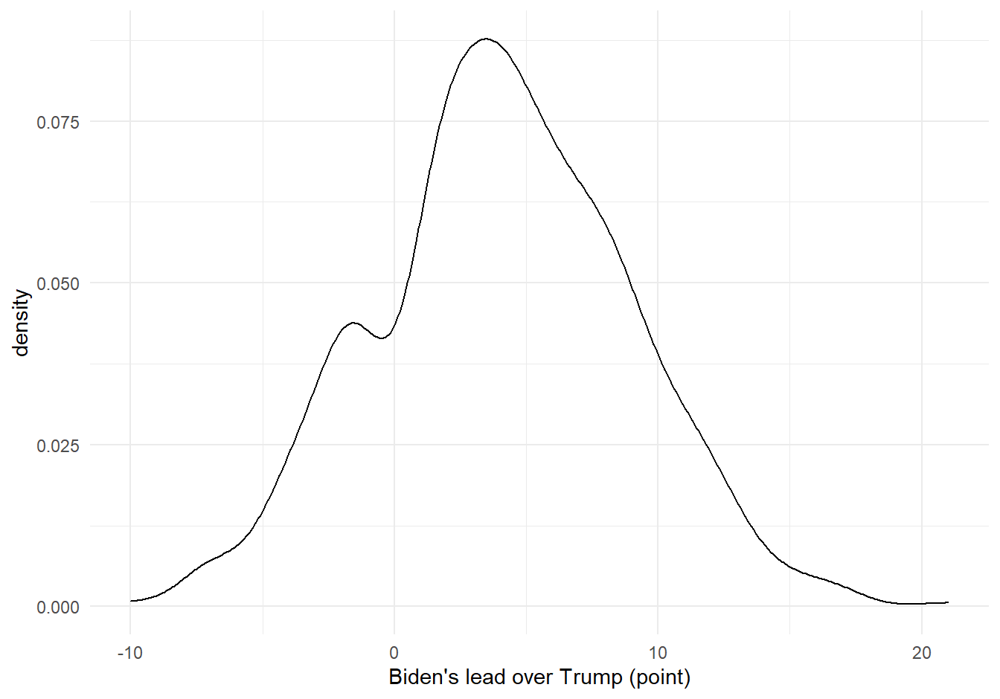

In the regression analysis, we found that Biden’s supporting rate in the seventeen battlegrounds states reported by all opinion polls slightly decreased as the COVID-19 pandemic progress, suggesting that Trump was more somewhat “benefiting” from COVID-19. This could be due to the “rally round the flag” effect, which illustrates the phenomenon that there is a short-term surge of voter approval of present nation leader during a crisis or emergency situation.
The 17 Battleground states include Florida, Pennsylvania, Wisconsin,North Carolina, Michigan, Ohio, Minnesota, Iowa, Arizona, Nevada, Texas, Georgia, Virginia, New Hampshire, Maine, Colorado, and New Mexico.
Visualization of the change in COVID status and supporting rates over time for each state can be checked here.
In this part, we aimed to examine the relationship between COVID-19 case / death rate and presidential poll by different battleground states. Since the COVID-19 statistics was a longitudinal measurement over time, generalized estimating equations (GEE) model was used to account for correlated data within each battleground state.
biden_lead: the difference between the supporting rate of Biden and Trump during the poll survey periodThe following density plot shows the distribution of biden_lead, which is approximately normal.
ggplot(data = poll_covid_df, aes(x = biden_lead)) +
geom_density() +
xlab("Biden's lead over Trump (point)")
mean_case the average number of incremental COVID-19 cases between the poll survey period
mean_death the average number of incremental COVID-19 death between the poll survey period
mean_pos_increase the average number of daily COVID-19 cases increased comparing to previous day between the poll survey period
mean_death_increase the average number of daily COVID-19 death increased comparing to previous day between the poll survey period
Estimates from GEE modelling:
# Model mean_case
model_case =
poll_covid_df %>%
drop_na(mean_case, biden_lead)
geeglm(biden_lead ~ mean_case,
data = model_case,
id = id,
family = gaussian(link = "identity"),
corstr = "exchangeable"
) %>%
broom::tidy() %>%
knitr::kable()| term | estimate | std.error | statistic | p.value |
|---|---|---|---|---|
| (Intercept) | 7.36714722 | 1.20900298 | 37.131625 | 0.00000000 |
| mean_case | -0.00000825 | 0.00000224 | 13.537204 | 0.00023388 |
# Model mean_death
model_death =
poll_covid_df %>%
drop_na(mean_death, biden_lead)
geeglm(biden_lead ~ mean_death,
data = model_death,
id = id,
family = gaussian(link = "identity"),
corstr = "exchangeable"
) %>%
broom::tidy() %>%
knitr::kable()| term | estimate | std.error | statistic | p.value |
|---|---|---|---|---|
| (Intercept) | 6.3090212 | 1.0659743 | 35.029223 | 0 |
| mean_death | -0.0002885 | 0.0000279 | 106.930087 | 0 |
# case increase
model_case_increase =
poll_covid_df %>%
drop_na(mean_pos_increase, biden_lead)
geeglm(biden_lead ~ mean_pos_increase,
data = model_case_increase,
id = id,
family = gaussian(link = "identity"),
corstr = "exchangeable"
) %>%
broom::tidy() %>%
knitr::kable()| term | estimate | std.error | statistic | p.value |
|---|---|---|---|---|
| (Intercept) | 5.2258382 | 1.11135249 | 22.11099397 | 0.00000257 |
| mean_pos_increase | -0.0000642 | 0.00019188 | 0.11194141 | 0.73794461 |
# death increase
model_death_increase =
poll_covid_df %>%
drop_na(mean_death_increase, biden_lead)
geeglm(biden_lead ~ mean_death_increase,
data = model_death_increase,
id = id,
family = gaussian(link = "identity"),
corstr = "exchangeable"
) %>%
broom::tidy() %>%
knitr::kable()| term | estimate | std.error | statistic | p.value |
|---|---|---|---|---|
| (Intercept) | 5.35789962 | 1.01141798 | 28.0625934 | 0.00000012 |
| mean_death_increase | -0.01086381 | 0.00711627 | 2.3305518 | 0.12685690 |
Based on the regression analysis, we have concluded that:
As COVID-19 cases increased, the difference of supporting rate between Biden and Trump decreased within each battleground state. The decrease was small but statistically significant.
As COVID-19 death increased, the difference of supporting rate between Biden and Trump decreased within each battle ground state. The decrease was small but statistically significant.
COVID-19 daily case / daily death was not correlated with the difference of supporting rate between Biden and Trump.
Interestingly, Biden supporting rate decreased by increase of COVID-19 cases and death over time. In other word, Trump supporting rate was increasing. This may be due the “rally round the flag” effect.
“Rally round the flag” effect is when there is a short-term surge of voter approval of present nation leader during a crisis or emergency situation. One of the most well-known example is during the 9-11 terrorist attack in 2001. The approval rate of President George W. Bush increased by 39% (from 51% to 90%).
According to Dickinson (2020), the main reason for this effect is the presidents’ relatively unique position in the American political system. Presidents is the only individual embodiment of the nation besides the partisan position. Therefore, the president can benefit from his stature as political head of government when circumstances threaten the nation.
He also pointed out that voters who are less politically aware are more responsive to the “rally round the flag” effect, which may be the majority of battleground state voter. Those partisan members are more likely to be ideological.
During the 2020 COVID-19 pandemic, this effect was also observed in several other countries including Australia, Canada, Germany, Britain, India, France, etc.
We found that as the number of COVID-19 cases and deaths increased, Trump’s supporting rate slightly increased in the seventeen battleground states.
The GEE regression model we built is relatively simple and we only considered four variables related to COVID status, so this regression analysis should be regarded as an initial and exploratory analysis to generate future hyptheses. Future investigations should consider other variables and potential confounders.